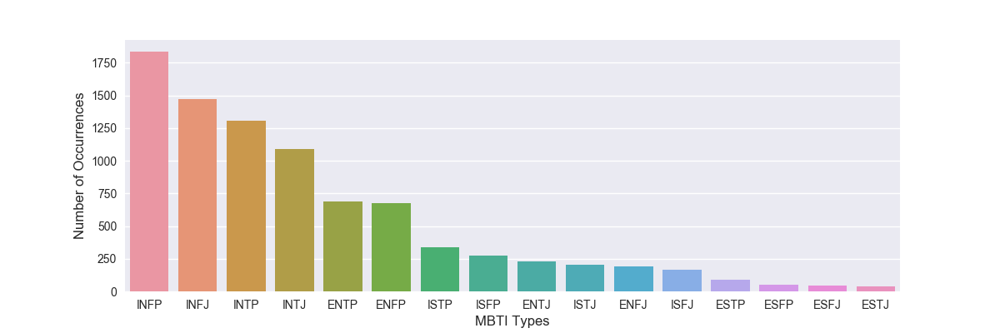
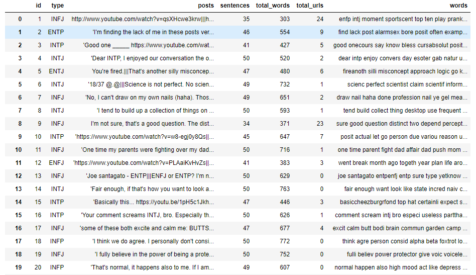
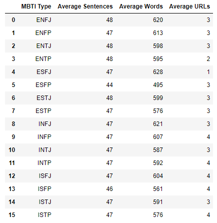
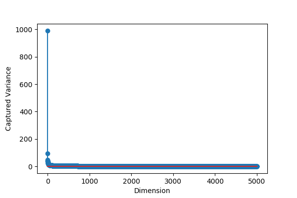
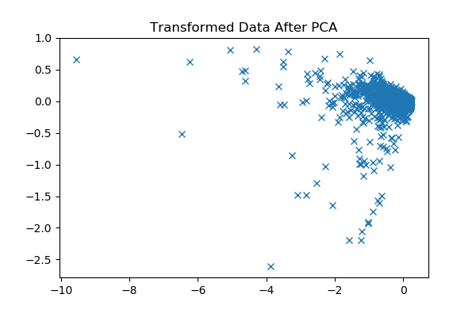
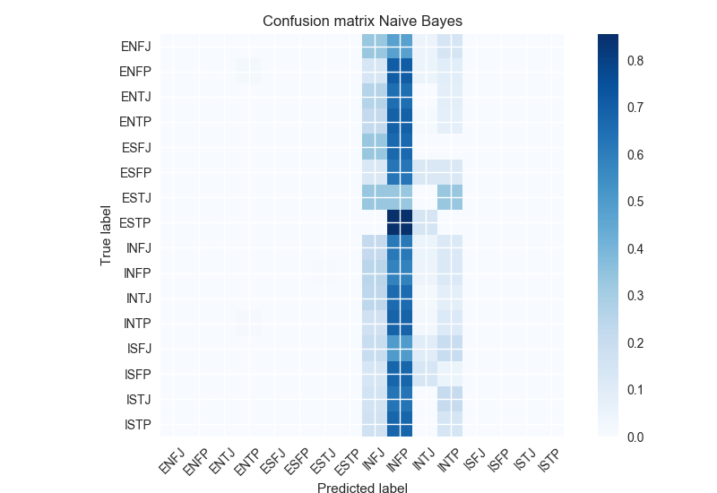
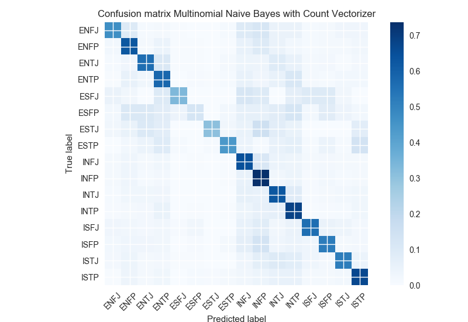
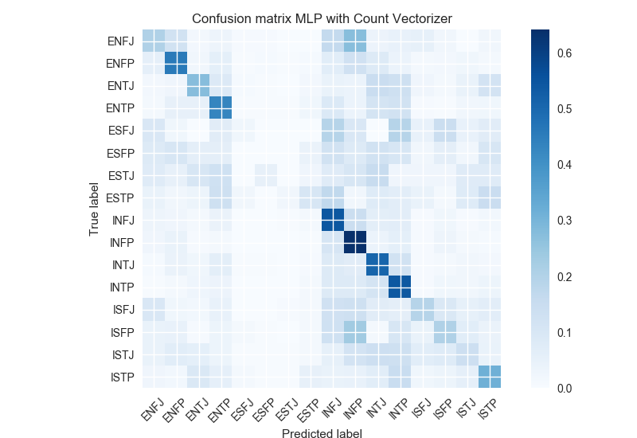

Virginia Tech - Department of Computer Science
Virginia Tech - Department of Computer Science
Virginia Tech - Bradley Department of Electrical and Computer Engineering
Our project aims to identify a correlation between people's writing styles and their psychological personalities. More specifically, we aim to determine whether one’s writing style is an accurate predictor of their personality type as classified by the Myers-Briggs Type Indicator. The MBTI sorts individuals into one of sixteen broad personalities based on the level of extroversion or introversion, sensing or intuition, thinking or feeling, and judging or perceiving.
We believe that freeform writing, such as that found within forum posts and social media, allow for a great degree of personal expression, and could be a good way to judge which personality category an individual may fall into. This personality test could be used in research, business, fun, and many more.
So, to this end, we aim to train a series of machine learning models in order to attempt to predict one’s Myers-Brigg personality, based entirely on samples of their writing. Our primary goal of this project is to convert the textual representation of freeform writing into a feature representation so that we can use the traditional machine learning models (such as Naïve Bayes, Logistic Regress, Multilayer Neural Network, etc.) to predict the MBTI personality type. Another goal of this project is to explore the state-of-the-arts techniques that people use for this prediction task and express the necessity of fancy machine learning models (RNN, ConvNets, CNNs, etc.) in this area
In this project, we use the Myers-Briggs Personality Type Dataset from kaggle [1]. The dataset has more than 8k examples where each example contains around 1500 words as a text and one of the sixteen MBTI types as a label. To analyze the dataset, we delved into the dataset and saw that most of the examples are associated with four MBTI labels (INFP 1832 times, INFJ 1470 times, INTP 1304 times, and INTJ 1091 times) out of the sixteen MBTI labels. So, the dataset is not balanced. As a result, machine learning classifiers have a good chance to predict the most common MBTI labels. The following figure illustrats the occurrences of each class.
1. Data Cleaning: Each row of the
dataset has a lot of URLs, extra white spaces, numbers,
punctuations, and stop words. So, we preprocess the text by
removing the URLs, white spaces, numbers, punctuations, and
stop words. The following figure illustrates the preprocessed dataset
where words column represents the cleaned tokenized words.
The next figure illustrates a basic summary of the preprocessed
dataset.


2. Traditional Model
a. Naïve Bayes – Count Method: This is the basic Naïve Bayes approach. We tried this method to see the learning works for a basic model. In this approach, we count all the tokens and calculate the prior class and feature probabilities. Then we predict the unknown class using the maximum posterior probabilities.
b. Multi-Layer Perceptron - Vector representation: In the approach, we convert the text of each example into a 32-dimensional vector using the genism Word2Vec [2] embeddings. To do that, we first calculate a 32-dimensional vector for each unique word of the text which is at least 3 characters long. Then we average the vectors to create a final vector (1 x 32) for a single example. Repeatedly applying this technique to all the examples provides us a matrix of 8675 x 32 dimension. Then we add the three features (average number of sentences, average number of words, and the average number of URLs) with the 32-feature vector to create a 35-feature vector for each example. We run the multilayer perceptron model to predict the MBTI type.
3. Improved Model
a. Principle Component Analysis: To do a principal component analysis, we pass the word vocabulary to a CountVectorizer to get the term-document matrix. We set 5000 as the maximum number of features and 1 as the ngram size in the CountVectorizer. So, we get 8675 x 5000 matrix. Then the matrix is converted to a normalized TF or TF-IDF representation. We apply the principal component analysis on the matrix. The following two figures represent the covariance and the data of the first two dimensions after transformation. We also get the percentages of variance explained by the first two components are 0.01268084 and 0.01058704.  
b. Multinomial Naive Bayes with TF-IDF and Count Vectorizer: As described above, we convert a collection of text documents to a matrix of token counts using the count vectorizer. Then we build the Multinomial Naive Bayes using those tokens as the features. Then we cross-validate the model using multiple folds.
c. Logistic Regression with TF-IDF and Count Vectorizer: Similarly, we convert a collection of text documents to a matrix of token counts using the count vectorizer and build a Logistic Regression using those tokens as the features. We cross-validate to validate the model using multiple folds.
d. Multi-Layer Perceptron with TF-IDF and Count Vectorizer: Again, we use the same matrix of token counts to build a Multi-Layer Perceptron 20 layers and 6 neurons. We also cross-validate the model using multiple folds.
1. Naive Bayes: The traditional model with the raw dataset doesn’t seem promising in terms of accuracy. The Naïve Bayes model with the basic counting technique produces around 19% accuracy and the model seems to predict the most comment type. The following figure llustrates the confusion matrix. 
2. Word to Vector Technique: The word to vector technique also doesn’t seem promising with the basic machine learning models. We use the word to vectors and passed those as the features of a multilayer neural network. We got around 22% accuracy. And, the model behaves weirdly because it always predicts a single type. We are not sure if there is any bug in our implementation. The follwing figure illustrates the confusion matrix.
3. Count Vectorizer with TF-IDF: The traditional models behave promisingly when we convert the word vocabulary to a matrix of token counts using the count vectorizer technique with TF-IDF similarity. When we pass the matrix of token counts as the features to the Multinomial Naïve Bayes, Logistic Regression, and Multilayer Perceptron models, we got 53%, 64%, and 48% accuracy, respectively. The following three figures illustrate confusion matrices.  
4. Comparsion:
|
Model name |
Accuracy |
| Naïve Bayes (basic counting) | 19% |
| Multilayer Perceptron (Word to Vector) | 22% |
| Multinomial Naïve Bayes (Count Vectorizer and TF-IDF Similarity) | 53% |
| Logistic Regression (Count Vectorizer and TF-IDF Similarity) | 64% |
| Multilayer Perceptron (Count Vectorizer and TF-IDF Similarity) | 48% |
Researchers in China [3] used the Big Five Personality Inventory to classify user’s personality traits, using web crawlers to collect data (as opposed to our project, which uses readily available Kaggle forum/blog posts). Using an SVM model, these scientists were able to achieve accuracy estimation scores of over 80% on each of the Big Five personality traits (agreeableness, conscientiousness, extraversion, neuroticism, and openness). Their results concluded that individual microblogging behavior could be used to classify personality with a high degree of accuracy.
Since the studies of neuroscience have proved that the complex and interconnected brain neurons have a close relation to written communication [4], the authors in [5] present a deep learning based model to predict the sixteen Myers Briggs Personality Types incorporating writing style from textbooks. The authors used a long short-term memory based recurrent neural network model and trained 7M labeled sentences to trained the model. However, they were able to achieve only 37% accuracy. Though the long short-term memory based recurrent neural network model has a very good reputation for higher accuracy, we believe that the reason for this low accuracy is that the dataset is heavily unbalanced.
In this project, our primary goal was to investigate different machine learning models to see how those models work for predicting MBTI personality type. We see the traditional machine learning models with the basic counting technique does not seem promising. But the traditional models with a combination of the counter vectorizer technique and TF-IDF seems to produce promising results. We believe that if we incorporate the count vectorizer technique into some fancy machine learning models, the accuracy will be further improved.
Presentation Slides: [PPT] [VIDEO]
Source Codes: Python Notebook
Dataset: Kaggle MBTI dataset
1. https://www.kaggle.com/datasnaek/mbti-type
2. https://radimrehurek.com/gensim/models/word2vec.html
3. Kalghatgi, M. P., Ramannavar, M., & Sidnal, N. S. (2015). A neural network approach to personality prediction based on the big-five model. International Journal of Innovative Research in Advanced Engineering (IJIRAE), 2(8), 56-63.
4. Adelstein, J. S., Shehzad, Z., Mennes, M., DeYoung, C. G., Zuo, X. N., Kelly, C., ... & Milham, M. P. (2011). Personality is reflected in the brain's intrinsic functional architecture. PloS one, 6(11), e27633.
5. Ma, A., & Liu, G. Neural Networks in Predicting Myers Brigg Personality Type From Writing Style.